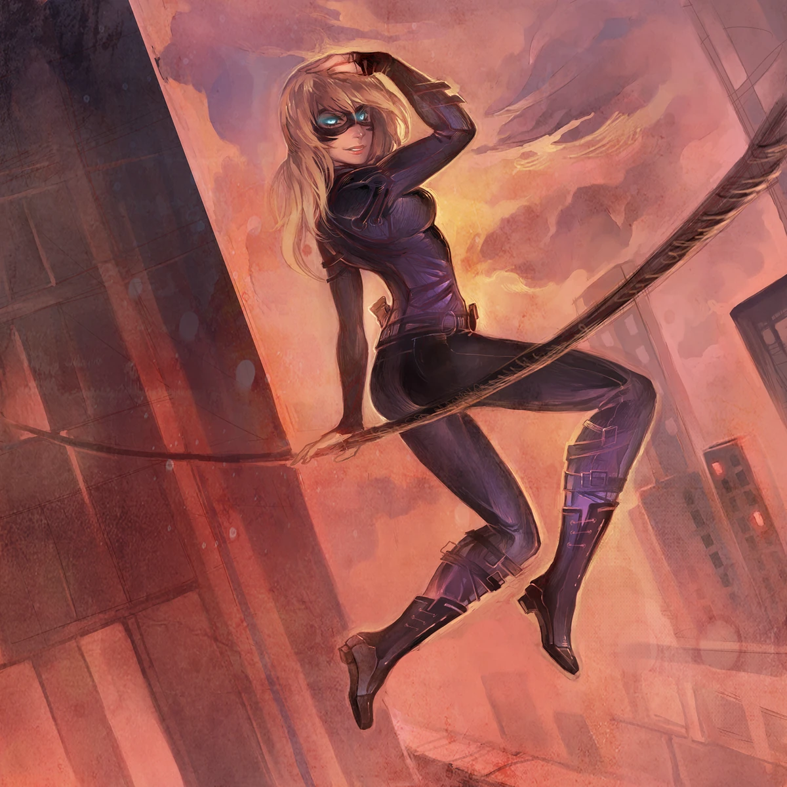
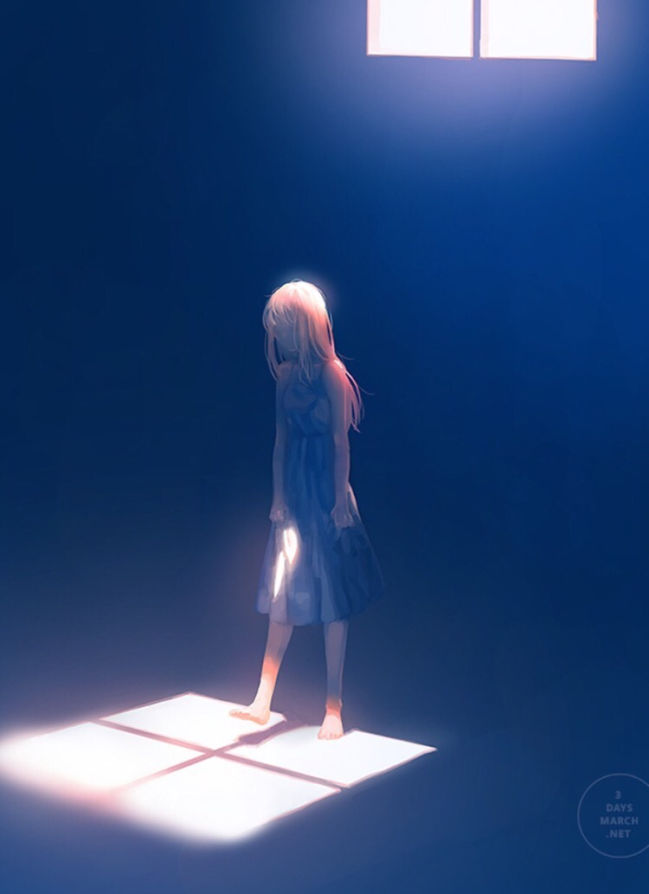
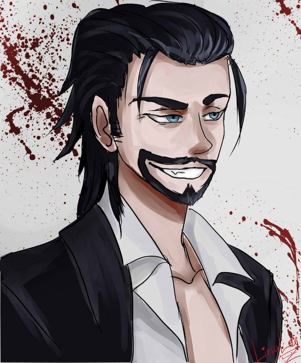

Personajes
Taylor Hebert / Skitter
Es la protagonista de la historia y tiene el poder de controlar insectos. A lo largo de la serie, se convierte en una figura clave en el mundo de los superhéroes y supervillanos.
Brian Laborn / Grue

Es uno de los amigos cercanos de Taylor y tiene la capacidad de crear oscuridad. Forma parte del grupo de superhéroes conocido como "Los Viajeros".
Lisa Wilbourn / Tattletale
También es amiga de Taylor y posee una inteligencia excepcional. Es una de las figuras más astutas y estratégicas en la historia.
Alec Vasil / Regent
Otro miembro de "Los Viajeros", tiene la capacidad de controlar los movimientos y acciones de las personas a través del contacto físico.
Rachel Lindt / Hellhound
Es una miembro de "Los Cuatro Jinetes del Apocalipsis" y tiene la habilidad de controlar y comunicarse con perros y otros animales.
Dinah Alcott
Una niña con habilidades precognitivas, su capacidad para prever el futuro es un elemento importante en la trama.
Coil (Thomas Calvert)
Es un influyente supervillano que juega un papel crucial en la trama. Es conocido por su estrategia y su habilidad para dividir el tiempo en dos líneas de tiempo diferentes.
Panacea (Amy Dallon)

Panacea es una poderosa curandera que puede curar cualquier lesión o enfermedad. Su interaccion con Taylor es un aspecto crucial de la historia.
Alexandria

Ella es una de las figuras más influyentes en el mundo de los parahumanos como un integrante del triunvirato y desempeña un papel crucial en varios momentos de la historia.
Jack Slash
Jack Slash es el líder de Matadero Nueve, una organización de supervillanos, y es uno de los antagonistas principales de la historia. Tiene la capacidad de potenciar las habilidades de otros miembros de su grupo.